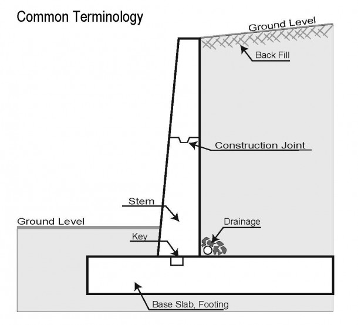

Rigid Gravity Walls: Rigid gravity walls may be constructed of stone masonry, unreinforced concrete, or reinforced concrete.
• Narrow base width
• Not used when deep foundations are required
• Most economical at low wall heights
• Dry-stacked gravity walls are somewhat flexible and do not require a rigid footing in frost areas.
Semi-gravity cantilever, counterfort and buttress walls:
• Constructed of reinforced concrete
• Relatively narrow base widths
• Supported by both narrow and deep foundations
• Easy drainage facility and load sensitive utilities.
• Most economical at low to medium wall height

Non- Gravity Cantilevered walls:
• Narrow base width
• Suitable for tight space constraints
• This type wall depends on passive resistance of the foundation material and the moment resisting capacity of the vertical structural members for stability, therefore its maximum height is limited by the competence of the foundation material and the moment resisting capacity of the vertical structural members.
• Max height 20ft.
• These walls require rigid concrete footings below seasonal frost depth. This type of wall uses much less material than a traditional gravity wall.
Anchored Walls
• Same components of non-gravity walls + anchors
• Anchor zone located at failure plane
• Suitable for construction of walls from top to bottom
• Height upto 80ft is feasible

Mechanically stabilised earth walls
• Either metallic (inextensible) or geosynthetic (extensible) soil reinforcement in the soil mass, and vertical or near vertical facing elements.
• MSE walls are typically used where conventional reinforced concrete retaining walls are considered, and are particularly well suited for sites where substantial total and differential settlements are anticipated
• Base width is greater
• No drainage through it however it can be provided through the soil mass
• Shall not be used where there are bridge abutments
• Shall not be used at harsh environmental conditions
• Metallic soil reinforcement

Brick Retaining Walls:
• They are also commonly employed on hillside properties for low walls or planter walls.
• Brick retaining walls lack steel reinforcement and usually are not provided with a proper foundation but unlike gravity, it has mortar bonding in between blocks providing some added strength over simple gravity walls.
• Surface and subsurface drainage control devices are also not usually provided efficiently for brick walls.
• Water pressure behind brick walls is a common source of distress and/or failure of brick walls.
Subdrainage System
Several methods can be utilized to prevent the building up of hydrostatic (water) pressure behind the retaining wall. Water pressure will exert 62.4 pounds per cubic foot of pressure on a retaining wall. Typical retaining wall designs employ a 30 to 43 pound per cubic foot equivalent fluid pressure. If water pressure is allowed to develop behind the wall, most walls will experience rotation or failure. To prevent this condition from developing, several methods can be employed which include weepholes, open headers in concrete block and subdrains.